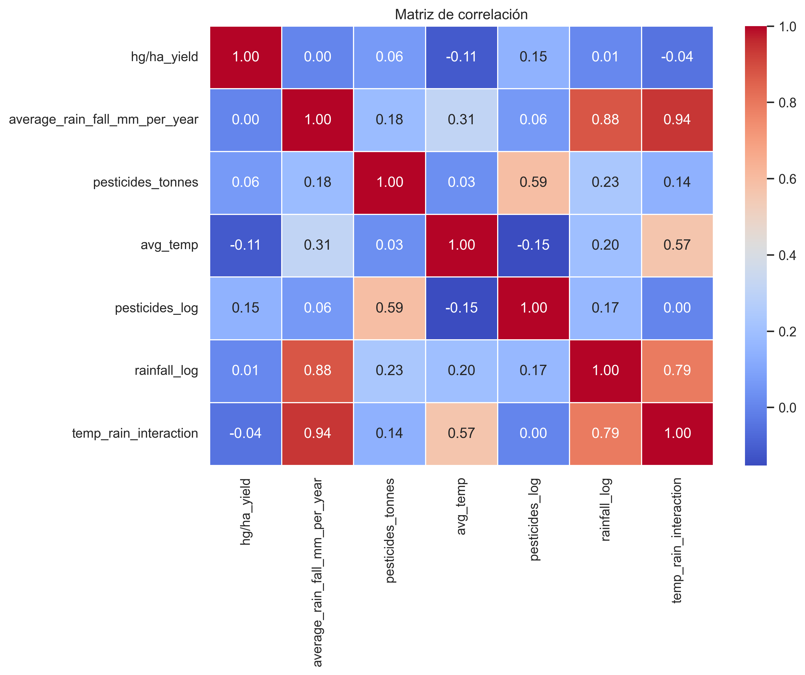
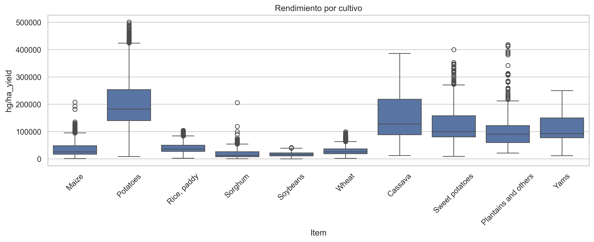

Este informe resume la descriptiva exploratoria del dataset integrado a partir de las tablas de lluvia, temperatura, pesticidas y rendimiento.
| hg/ha_yield | average_rain_fall_mm_per_year | pesticides_tonnes | avg_temp | pesticides_log | rainfall_log | temp_rain_interaction | |
|---|---|---|---|---|---|---|---|
| count | 28242.00 | 28242.00 | 28242.00 | 28242.00 | 28242.00 | 28242.00 | 28242.00 |
| mean | 77053.33 | 1149.06 | 37076.91 | 20.54 | 8.97 | 6.81 | 25007.11 |
| std | 84956.61 | 709.81 | 59958.78 | 6.31 | 2.47 | 0.79 | 19421.89 |
| min | 50.00 | 51.00 | 0.04 | 1.30 | 0.04 | 3.95 | 402.50 |
| 25% | 19919.25 | 593.00 | 1702.00 | 16.70 | 7.44 | 6.39 | 9976.08 |
| 50% | 38295.00 | 1083.00 | 17529.44 | 21.51 | 9.77 | 6.99 | 22789.00 |
| 75% | 104676.75 | 1668.00 | 48687.88 | 26.00 | 10.79 | 7.42 | 32913.09 |
| max | 501412.00 | 3240.00 | 367778.00 | 30.65 | 12.82 | 8.08 | 89974.80 |

| corr_hg_ha_yield | |
|---|---|
| pesticides_log | 0.147 |
| pesticides_tonnes | 0.064 |
| rainfall_log | 0.013 |
| average_rain_fall_mm_per_year | 0.001 |
| temp_rain_interaction | -0.045 |
| avg_temp | -0.115 |
